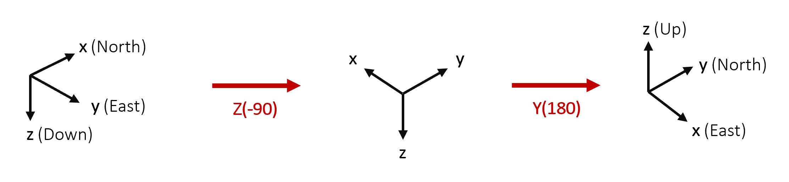

User-defined Local Frame
Generic Aiding functionality allows users to define a local coordinate system for some measurement types. Currently supported types are:
Position
Velocity
Attitude
Heading
More detail on how to use the local frame with each update type can be found in the relevant document for the individual update type.
Define the frame
This local frame is defined by two components:
Translation: (Lat, Long, Alt) in the WGS84 global frame. This sets the origin of the local coordinate frame in the global frame.
Rotation: (Yaw, Pitch, Roll) angles relative to the North, East, Down local coordinate frame. These angles follow the \(Z_1 Y_2 X_3\) convention. The rotation matrix is constructed from these values using the following formula:
To make use of the local frame, the user must define the local coordinate frame in the configuration of the INS. Doing so requires the advanced commands:
-gad_lrf[lrf_id]_[lat]_[lon]_[alt]_[yaw]_[pitch]_[roll]
-gad_lrf_id[stream_id]_[lrf_id]
See Advanced commands for more information.
Note that this aiding type only supports right-handed coordinate systems.
Example
As an example, we define the rotation between the East, North, Up (ENU) local reference frame and North, East, Down (NED). We start with the NED frame and rotate around the Z axis, then Y, then X to align it to ENU. This will provide the correct angles for Yaw, Pitch, and Roll respectively.
From the above diagram, we can see that the required rotations are \(-90^{\circ}\) around the z axis, followed by 180° around the y axis. No rotation is required around the x axis. The advanced command is then:
-gad_lrf1_51.9151949168643_-1.2440690876840934_94.597_-90.0_180.0_0.0
The Latitude, Longitude, and Altitude are independent of the orientation of the local reference frame. They will need to be determined based on the location of the origin of the local frame on the Earth.
A simple way to verify whether the rotation has been defined correctly is to create the rotation matrix from the yaw, pitch, and roll angles and apply it to a dummy point \(p_{user}\) in the user-defined local frame.
For most rotations, it is clear whether this point is in the correct place in the NED frame.